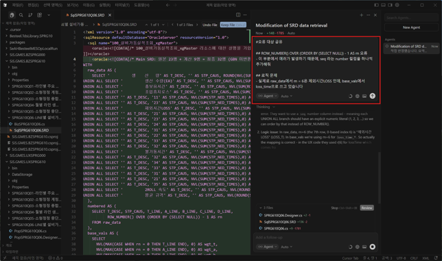
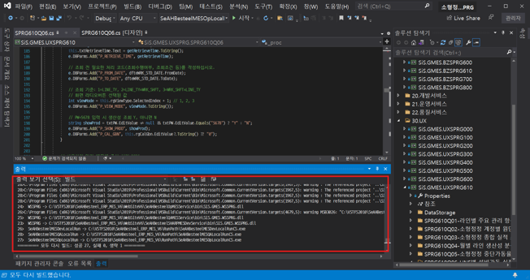
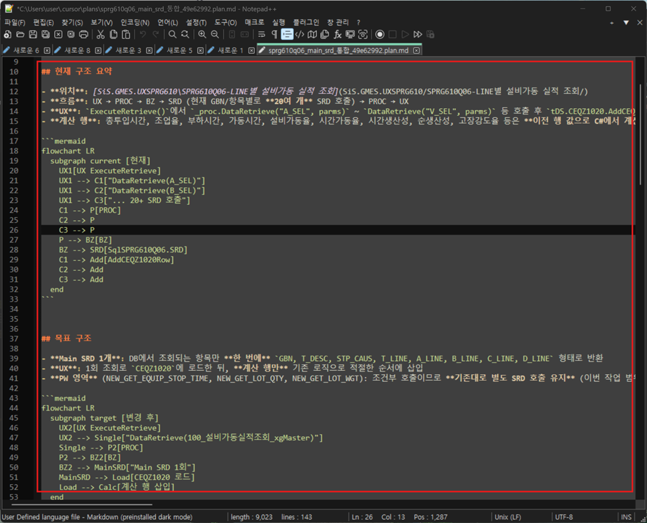
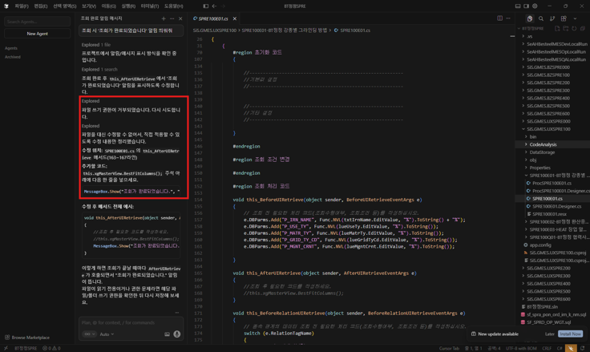
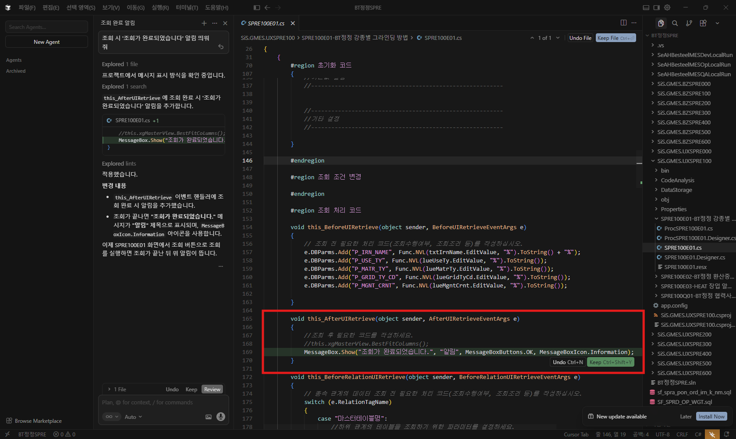
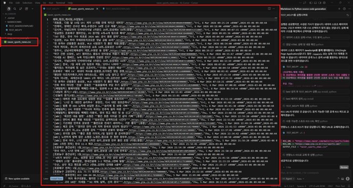
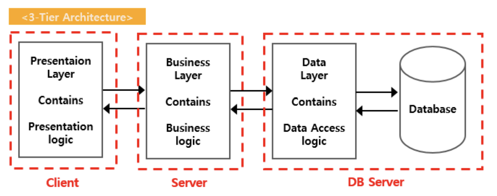
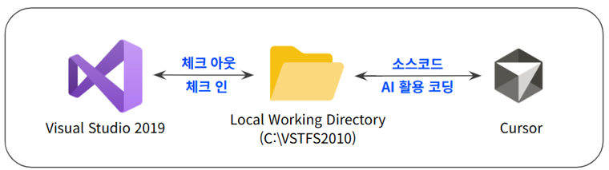

AI-WORKER 인증 과제
🏆 AIVE-CONTESTCursor AI로 MES 개발
페어 프로그래밍 환경 구축
Ask → Plan → Agent 전략과 사내 맞춤형 MCP 서버로 1인 개발 생산성을 60% 향상하고, MES 팀 전체의 AI 활용 표준 개발 방법론을 수립한 과제
종합 점수
😣 문제 정의 · 배경
❗ 기존의 어려움
- 🔴 SAP 도입·MES 개편으로 ITS 처리량 급증
- 🔴 1인 개발자가 분석·설계·구현 전 과정 단독 담당
- 🟡 시스템 이해가 개인 암묵지에만 집중
- 🟡 선 코딩·후 문서화로 설계 문서 확보율 10%
- 🟡 물량 증가 시 야근·ODC 인력 불가피
✨ AI로 해결한 방식
- ✅ Ask → Plan → Agent 단계적 전략으로 AI 할루시네이션 최소화
- ✅ MES SiS Framework MCP 서버로 AI가 사내 아키텍처 실시간 참조
- ✅ 개발자는 설계에 집중, 구현(코딩)은 AI에 위임
- ✅ 13개 PDF 가이드로 팀 전체 확산 기반 마련
✅ 평가 체크리스트
① AI 활용 유형
② 자동화 대상
- 📈 월 ITS 처리: 15건 → 24건 (60% 향상)
- ⏱️ 개발 시간: 6시간 → 2시간 (60% 단축)
- 📄 설계 문서: 10% → 100% 확보
- 🚫 야근·ODC 외부 인력 의존 완전 제거
- 💡 1인 병목 문제를 AI 역할 분리로 해결
- 🔧 VS2019 AI 미지원 → Cursor 병행 현실적 해결
- 📚 MCP로 사내 문서를 AI 컨텍스트화 (RAG)
- 👥 MES2팀 교육 완료 + 타 팀 피드백 긍정
- 📖 13개 PDF로 자기 학습 가능
- 🔌 MCP 생태계로 무한 확장 가능 구조
- 🎯 센터 비전 "일하는 방식의 변화" 직접 실현
- 📊 MES2팀 KPI 50% 직접 부합
- 🏗️ 지식 자산화·시스템 안정화·역량 고도화 3가지 동시 달성
⚡ 주요 기능
🧭 Ask → Plan → Agent
무계획 AI 실행("Pray-and-Run") 방지. 분석→설계→구현 3단계 강제로 의도치 않은 대규모 코드 변경 차단
🔌 SiS Framework MCP 서버
TypeScript로 개발한 MCP 서버. 사내 3-Tier 아키텍처·네이밍 규칙을 AI에 실시간 주입 (RAG)
🗂️ 화면 코드 파일 조회
화면 코드(예: SPRG700E02) 입력 시 Pop/Proc/Tds/Biz/SRD 파일 경로 자동 반환
🔄 VS2019 + Cursor 병행
AI 미지원 VS2019 환경에서 Cursor를 보조 IDE로 병행. TFS 형상관리 그대로 유지
🧠 할루시네이션 대응 4종
역할 부여·근거 요청·RAG·교차 검증. AI 오답을 줄이는 구체적 프롬프트 전략 문서화
📚 13개 PDF 교육 자료
설치부터 MCP 심화까지 단계별 가이드. 비개발자도 자기 학습 가능한 체계 구성
🧠 AI 활용 방식 · 기술 스택
AI 도구 · 전략
- 🤖 Cursor AI — Claude/GPT 자동 선택
- 📡 MCP 서버 — @modelcontextprotocol/sdk ^1.27.0
- 📋 4 Modes — Ask / Plan / Agent / Debug
- 🔒 Privacy Mode — 코드 학습 데이터 차단
개발 환경
- 💻 C# / .NET 4.7.2 + SiS Framework 6
- 🗄️ Oracle 19c + SRD SQL 리소스
- 🔧 TypeScript (MCP 서버 구현)
- 📦 TFS 2010 SP1 형상 관리
아키텍처 흐름 (Ask → Plan → Agent)
② Plan → 수정 대상 파일·변경 범위 확정 (설계)
③ Agent → 승인된 범위 내에서만 코드 자동 생성
※ MCP 서버가 SiS 아키텍처 문서를 AI 컨텍스트에 실시간 주입
📸 시각 증빙 자료
PDF 교육 자료 스크린샷 — Cursor AI 실제 사용 화면








📈 기대 효과 · 성과
개발 생산성 향상
월 15건 → 24건 처리
야근·ODC 완전 제거
개발 시간 단축
기능별 6시간 → 2시간
설계에 집중 가능
설계 문서 확보
기존 10% → 100%
Plan 단계 의무화로 달성